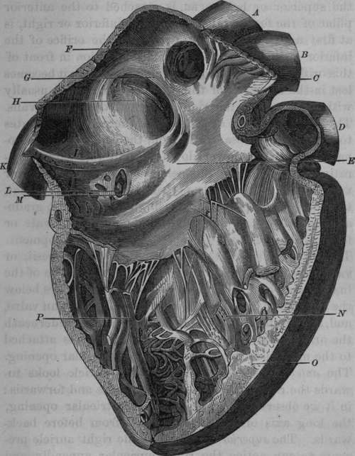

The Right Auricle
Description
This section is from the book "Anatomy Of The Arteries Of The Human Body", by John Hatch Power. Also available from Amazon: Anatomy of the Arteries of the Human Body, with the Descriptive Anatomy of the Heart.
The Right Auricle
The Right Auricle is of an irregular shape; it is said to possess the form of the segment of an ovoid: it presents for examination three walls, an antero-external, a posterior situated behind and between the orifices of the two venae cavae, and an internal or the septum auricularum: and two extremities, an anterior inferior, and a superior. The antero-external wall is easily defined, as it is formed by all that portion of the right auricle which may be seen on opening the pericardium; it is convex, and presents several dark lines corresponding to the intervals between the musculi pectinati, to be described hereafter. In order to see the internal surface of the auricle, we should make two incisions; one in a vertical direction through the front of the auricle, connecting the orifices of the superior and inferior venae cavae; the other in a slightly curved direction, the convexity directed downwards, commencing at the lower part of the right auricular appendix, and terminating in the superior extremity of the preceding incision. In this manner a flap will be formed out of the external wall of the auricle; and we will now have an opportunity of examining the structure of this wall.
Its muscular fibres are arranged in fasciculi, somewhat resembling the teeth of a comb ; they have been therefore termed the musculi pectinati: in the intervals between these fasciculi, the lining membrane of the interior of the auricle, and the serous membrane covering the heart, are almost in immediate contact. A tubercle has been described as projecting from the back part of the posterior wall into the auricle, called the tuberculum Loweri. If we examine the entrance of the great veins into the auricle, we will observe that the superior cava passes downwards, forwards, and to the left side; and the inferior cava, upwards, backwards, and to the left side: we can readily understand, therefore, that the portion of the auricle between their orifices must of necessity be salient towards the interior of this cavity; this projecting part of the auricle placed between the openings of these two great veins, forms the tubercle of Lower. The use ascribed to it, is, to direct the blood towards the centre of the auricle, and thus prevent the currents of the superior and inferior venae cavae from directly opposing each other.
The internal wall constitutes the septum between the two auricles; it is obliquely situated, so that its right surface, which we are at present examining, looks also a little forwards. On its lower portion it presents a well-marked depression, somewhat oval in form, called the fossa ovalis: it is bounded by two well-defined ridges or pillars, one on either side; that on the right side being also placed posteriorly; that on the left, anteriorly: the latter is much stronger than that on the right side, and it separates the fossa ovalis from the opening of the coronary vein, and gives attachment to the left cornu of the great Eustachian valve. These two pillars are continuous with one another superiorly, so as to form an arch over the fossa ovalis, the concavity of which is directed downwards. This prominent margin which bounds the fossa, has received the name of the annulus Vieussenii. It is not, however, correctly speaking, an annular projection, the pillars not being joined together inferiorly. That portion of the septum included between the pillars, and which may be called the floor of the fossa ovalis, contributes to form a valvular opening between the auricles in the intra-uterine period of life. This opening has been called the foramen ovale, or foramen of Botal, although it had been previously described by Galen. The upper part of the floor projects into the left auricle above the point of junction of the pillars of the fossa, and there forms an arch, the concavity of which is directed upwards; this can be seen only from the interior of the left auricle. Before the second month of intra-uterine life, this valvular apparatus does not exist; there is in fact at this period a direct communication between the auricles: at the end of the second month, it begins to be developed; and at the seventh month, the superior margin of what we have called the floor of the fossa ovalis, ascends sufficiently high into the left auricle, to cut off the direct aperture of communication; leaving however an oblique or valvular channel between the auricles. This aperture of communication is, in the normal state, closed in the adult by the adherence of the upper edge of the valve to that surface of the annulus of Vieussens which looks towards the left auricle. Belated to the opening of the inferior vena cava and to the fossa ovalis, we observe the great Eustachian valve; it presents a crescentic form: the concave margin, which is generally well defined, is free, and looks upwards and towards the right shoulder; the convex margin is not at all so well defined, being in fact continuous with the lining membrane of the anterior wall of the inferior cava, at that spot where this vein and the auricle become united with each other: this margin of the valve looks downwards and towards the left side. The valve has two cornua or extremities: one, the superior or left cornu, is attached to the anterior pillar of the fossa ovalis; the other, inferior or right, is at first united to the anterior wall of the orifice of the inferior cava, and then sends an expansion in front of this orifice round towards its right side, where it becomes lost in the structure of this portion of the vein, usually without reaching the right pillar of the fossa ovalis. The superior or left attachment of the valve contributes to separate the fossa ovalis from the orifice of the coronary vein, whilst lower down we find this valve separating the opening of this vein from that of the inferior vena cava. In the early periods of fcetal development, the valve is proportionally well marked; but it gradually diminishes as the valve of the foramen ovale or fossa ovalis increases towards its perfect development. The Lesser Eustachian Valve, or Valvula Thebesii, or valve of the coronary vein, is a small duplicature of the lining membrane of the vein and auricle : it arises below the anterior attachment of the greater Eustachian valve, and, separating from it as it descends, turns underneath the orifice of the coronary vein, and becomes attached to the margin of the right auriculo-ventricular opening. The anterior inferior extremity of the auricle looks towards the right ventricle, i. e. downwards and forwards : in it we observe the right auriculo-ventricular opening, the long axis of which is directed from before backwards. The superior extremity of the right auricle presents to our notice the right auricular appendix, and the opening of the superior vena cava, with a smooth surface situated between these two parts: the right auric'ular appendix is triangular in its form, and situated between the aorta and right ventricle: its base is continuous with the auricle, without any line of demarcation : its apex is turned transversely towards the left side : posteriorly it is concave, and over-laps the aorta : its interior is strongly marked by musculi pectinati. The superior cava takes a direction downwards, forwards, and to the left side; its orifice is situated on a plane anterior to that of the inferior cava; two prominent muscular bands bound this opening: one of them separates it from the orifice of the inferior cava; the other, not so well marked, is situated on the left side, and separates the orifice of the vein from the auricular appendix. The inferior cava, in approaching the heart, takes a direction upwards, backwards, and to the left side : at first it ascends almost perpendicularly, and then, assuming a more horizontal direction, turns abruptly into the auricle, immediately before which it frequently presents a dilatation. Its orifice is larger than that of the superior cava, and is situated on a plane posterior to it: it likewise differs from it in its relation to the Eustachian valve.
Fig. 3. Interior of Right Auricle and Ventricle.
A, Superior Vena Cava. B, Aorta. C, Musculi Pectinati of the Right Auricular Appendix. D, Pulmonary Artery. E, Interior of the Right Auricle. F, Opening of the Superior Vena Cava. G. Annulus of Vieussens. H, Fossa Ovalis. I, Eustachian Valve. K, Inferior Vena Cava. L, Opening of the Coronary Vein. M, Valve of Thebesius. N, Cavity of Right Ventricle. O, Section of the Right Ventricle at the septum. P, Carnese Columnae.
A number of minute openings on the inner surface of the auricle have been described as the orifices of what are termed venai Thebesians: it is by no means certain that they are the orifices of vessels.
Continue to: